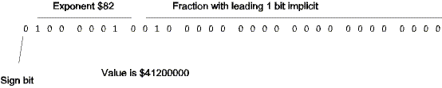
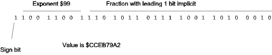
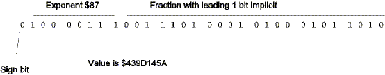

| Previous Section | Next Section | Index | Questions | Search the Text |
Floating point arithmetic would not be useful to us if we had no way of converting between floating point representation and integers.
Converting to floating point is the simplest operation of out floating point library. An exponent value of 127 corresponds to a fraction having its binary point 23 bits from the right, so an exponent field of 150 (127+23) corresponds to a fraction having its binary point at the far right - an integer! So the algorithm involves placing the integer into the unpacked fields, then using the fpPack function to normalize the value. A check is made of the value being zero; otherwise the normalization process would be painfully slow. Our only other concern is handling negative values, since the fraction is unsigned.
Let's try a couple conversions. First let's convert the integer 10. This corresponds to the 24 bit binary value
0000 0000 0000 0000 0000 1010 with exponent 150
To normalize, we will need to shift it left 20 times giving:
1010 0000 0000 0000 0000 0000 with exponent 130 ($82)
We then pack the value into the IEEE format:

The value -123456789 is represented by the integer $F8A432EB. Since the fraction is unsigned, we complement the negative value and get $75BCD15. This gives us the 27 bit binary value
111 0101 1011 1100 1101 0001 0101 with exponent 150
Normalization will shift the value to the right until the most significant 1 is at bit 24. this will take three shifts, giving:
1110 1011 0111 1001 1010 0010 with exponent 153 ($99)
We loose the three least significant bits. The floating point format only maintains 24 bits of significance and this is a 27 bit value. We should round the result for the most accurate results. Packing the value into IEEE format we get:

Let's look at the implementation. This function, like the others we will see, stores all its necessary variables on the stack so that there is no need to allocate RAM memory explicitly for the function. All of the floating point library functions use 22 bytes or less or stack memory, including the space for the argument(s).
fpFloat: ; Convert integer to floating point
ldy #0
ldx 4,sp ; Least significant word of 32 bit integer value
ldd 2,sp ; Most significant word
bmi fpFloatMi ; value is negative
bne fpFloatPl ; value is positive
cpx #0
beq fpFloatZer ; value is zero -- we are done
bra fpFloatPl ; (integer zero and floating point zero are identical)
fpFloatMi:
ldy #$8000
coma ; Negate value
comb ; 32 bit integer negate is similar technique
exg D X ; to a 16 bit negate. Neither is particulary
coma ; efficient.
comb
addb #1
adca #0
exg D X
adcb #0
adca #0
fpFloatPl:
pshx ; Push low fraction then high fraction
pshd ; (6 byte unpacked value formed by these pushes)
movb #150 1,-SP ; Push exponent value 150
tfr Y D
psha ; push sign
tfr SP X ; unpacked value is at SP
leay 8,SP ; result to go to location of 32 bit integer
jsr fpPack
leas FPSIZE,SP ; Reset stack to point at start of function
fpFloatZer:
rts
While one needs to convert input values to floating point before performing calculations on them, constant floating point values can be calculated in advance. A program can be written in C or some other language to run on the development platform that will show the hexadecimal constant representing an IEEE floating point value. A Java applet which does the conversion is embedded in this text here:
The file Floating.jar in this directory can also be run under Windows by double-clicking on the file in Windows Explorer, or run from the command line with the command "java -jar Floating.jar".
This is also useful for generating constants of irrational numbers. For instance, running this program we find that Pi, 3.14159, is the hexadecimal value $40490fd0. We can multiply a floating point value on the stack by Pi by executing:
movw #$0fd0 2,-SP ; PI (low order of value)
movw #$4049 2,-SP ; PI (high order of value)
jsr fpMultiply
The operation to convert from floating point to integer is basically the opposite from converting to floating point from integer. We need to shift the fraction so that the exponent is 150, that for which the fraction is an integer value. This can involve shifting to the left to make the exponent smaller or shifting to the right to make the exponent larger. If in the process of shifting to the left the value overflows a 32 bit quantity, then the value is too big to fit in an integer, and the function should indicate overflow by setting the V condition code flag. Infinity also is an overflow condition.
Let's convert the IEEE floating point value $439D145A to integer. We need to split the value into its separate fields:

Inserting the leading 1 bit, we get the fraction and exponent:
1001 1101 0001 0100 0101 1010 with exponent 135 ($87)
Shifting to make the exponent 150 requires 15 right shifts, giving us:
1 0011 1010 with exponent 150
The integer fraction is shifted off. The value is $13A, or 314 decimal. The original floating point value was actually 314.159, or 100*Pi.
The library function for converting to integer is called fpFix. This function uses a utility function fpAdj to shift and adjust the exponent to be 150. Because of the size of the functions, they are not replicated here but do appear in the library source file.
Floating point values can obviously be so small that they become zero when converting to integer. Sometimes it might be desired to convert to a scaled integer to maintain significant bits. This scaling can be done prior to conversion to integer by multiplying the (floating point) value by the desired scaling factor. For instance if we multiply by 10 first, then the integer value would have a scale factor of 0.1. Here's the Celsius to Fahrenheit conversion program we've seen earlier, but modified to store the Fahrenheit temperature as a 32 bit integer with units of tenths of a degree (scale factor of 0.1). It is also modified by having calculated the 1.8, 10.0, and 32.0 floating point values in advance.
movw celsius+2 2,-sp ; push C on stack
movw celsius 2,-sp
movw #$6666 2,-sp ; push 1.8 on stack
movw #$3fe6 2,-sp
jsr fpMultiply ; multiplies C by 1.8
movw #$0000 2,-sp ; push 32.0 on stack
movw #$4200 2,-sp
jsr fpAdd ; add 32
movw #$0000 2,-sp ; multiply by 10 for scaling
movw #$4120 2,-sp
jsr fpMultiply
jsr fpFix ; convert to scaled integer
movw 2,sp+ fahrenheit ; and store
movw 2,sp+ fahrenheit+2
The calculation is (celsius*1.8 + 32.0)*10.0. The calculation could be made to run faster by eliminating an unnecessary multiply. This will be left as an exercise.
Continue with Floating Point Multiplication.
Return to the Index.